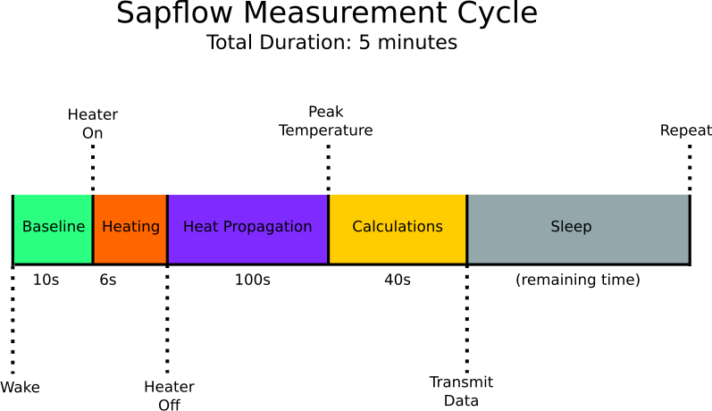

- Generated by
 1.8.17
1.8.17
|
SapFlow Probe
A low-cost HRM probe for measuring a tree's water consumption
|

Baseline: Measures the initial temperature at the upper and lower probe. Samples temperature once per second for 10 seconds. See baseline() for details.
Heating: Turns on the heater probe for 6 seconds. See schedule() for details.
Heat propagation: This is simply a waiting period where the heat pulse has not reached the upper and lower temperature probes. See schedule() for details.
Calculation: This is where we measure the amplitude of the heat pulse at the upper and lower temperature probes and calculate the sap flow. Samples temperature once per second for 40 seconds. See delta() for details.
Sleep: We sleep here to save power. See sleep_cycle() for details.
1.8.17